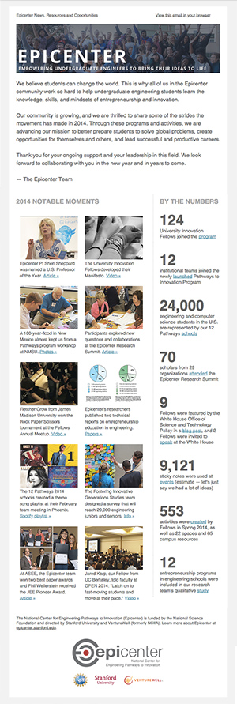
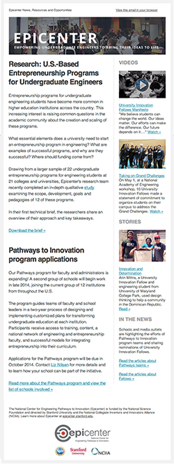

Epicenter's monthly e-newsletters featured news, events, stories and teaching tools related to entrepreneurship and innovation in undergraduate engineering education.
|
 |
|
 |
Archive
2016
July 2016: Thank you and a look to what's next
June 2016: One school's entrepreneurship journey; ASEE sessions; creating a connected city
May 2016: Giveaway; Summer Reading List; InVenture Prize
April 2016: Research papers; community feedback; inside the UIF meetup
March 2016: New papers, instructional spaces guide, event photos
February 2016: The Future of Epicenter
January 2016: New games paper, peer learning, hackathon guide
2015
December 2015: Creating makerspaces; Computer science meets fashion; New community members
October 2015: Pathways in Las Vegas, Regional Meetups, Student application deadline
September 2015: Creative orientation activities, how to hold a pop-up class
August 2015: Faculty and student proposal deadlines; White House commitment letters
July 2015: New research papers; Nine ways to grow your innovation and entrepreneurship ecosystem
June 2015: Call for proposals; evidence of an entrepreneurial mindset; Epicenter at ASEE
May 2015: Innovation and entrepreneurship games; capstone design projects; UIF road trip
April 2015: STEM student initiative; Tips for innovation spaces; Faculty perspectives
March 2015: Epicenter at Open 2015; Fellows Summer Deadline
February 2015: Engineering Majors Survey, New University Innovation Fellows, Pathways in Phoenix
January 2015: New Pathways schools; faculty glimpse into a student movement
2014
December 2014: The Best of 2014
November 2014: Happy Entrepreneurs' Day! Activity guide, White House recognition and more
October 2014: Big research questions; program application deadlines; new Fellows
October 2014: Sponsor a University Innovation Fellow at your school
September 2014: Join a national student movement
September 2014: Join us on the Pathways road trip
September 2014: Global engineering; educators seminar; entrepreneurship camp
August 2014: Pathways program info sessions; innovation spaces video series
August 2014: Research Summit; Innovation Space Videos; Open Source Movement
July 2014: Maker Movement; Student Design Competitions; New Research Papers
June 2014: Call for proposals: Pathways to Innovation Program
June 2014: ASEE Sessions; Innovation Space Guide; Application Deadlines
May 2014: Sponsor a University Innovation Fellow at your school
May 2014: Research on entrepreneurship programs; Pathways program applications
April 2014: New students and leaders join Epicenter community
March 2014: New Pathways to Innovation Program; Upcoming Events
February 2014: Online Creativity Class; Spaces of Invention; Entrepreneurship Games
January 2014: Sponsor a student leader on your campus
January 2014: Entrepreneurship Education Conference; Fellows Deadline
2013
December 2013: Grand Challenges Workshop, Entrepreneurship Advice
November 2013: HBCU Innovation Summit, Student Entrepreneurship Wiki
September 2013: Engineering students take action; innovation showcase
August 2013: University Innovation Fellows Program
July 2013: Online class; Lean LaunchPad for educators; Draper University blog
June 2013: ASEE; Epicenter in The Bridge; OPEN Call for Papers
May 2013: Design Thinking Online Class; How to Run a Design Bootcamp
April 2013: Entrepreneurship Games; I2E2 Summer Institute
April 2013: Online Classes on Creativity, Entrepreneurship and Innovation
March 2013: Insights on E-ship Living-Learning Programs; Student Ambassadors; NCIIA OPEN 2013
February 2013: Alumni Innovation Survey Tool; Empowering Student Entrepreneurs
January 2013: New Training for Student Ambassadors; E-Bootcamp; NAE Video Competition
2012
December 2012: Free Innovation Challenges iBook, 1,000 Pitches and More
November 2012: Living-Learning Programs, Educators Workshop and More
October 2012: Engineering the Future, Entrepreneurship Online and More
September 2012: Free Online Courses, Student Stories and More
August 2012: Your Story Here: Share. Learn. Inspire.
July 2012: Join Us for the Epicenter Retreat
June 2012: The Epicenter Wants You This Summer
May 2012: Epicenter Program Opportunities: Summer 2012
April 2012: Epicenter Launch at OPEN 2012
March 2012: Advisory and Curation Boards Announced
February 2012: We LOVE Entrepreneurial Engineers